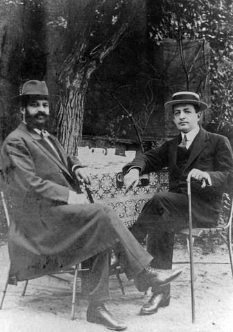

Jakab Weisz
1873–1915
Life events
| Hebrew Name | 1873 · Yakov son of David Mayer יעקב בן דוד מאיר |
|---|---|
| Born | 17 Jun 1873 · Simand, Arad, Romania Map  |
| Lived | 1876 · Lazar Utca, Békéscsaba, Bekes, Hungary Map · Zsidó templom utca - Jewish Temple street. |
| Education | 1883 - 1894 · Dohány u. 2 1074, Budapest, Hungary Map · Student |
| Education | 1894 - 31 Dec 1898 · Polish Synagogue, 1020 Leopoldsgasse 29, Vienna, Austria Map · Student and then Cantor |
| Lived | |
| Lived | 1 Jan 1899 - 31 Dec 1900 · Cakovec, Medimurje, Croatia Map · First Job as Oberkantor |
| Lived | 11 Apr 1899 · 1020, Taborstrasse 49, Vienna, Austria Map · per marriage record |
| Married | 11 Apr 1899 · Ernestine Blau · Polish Synagogue, 1020 Leopoldsgasse 29, Vienna, Austria Map  |
| Lived | 1 Jan 1901 - 28 Mar 1915 · Karlovy Vary, West Bohemia, Czech Republic Map · Was Karlsbad, Austria Hungary |
| Lived | 1906 · Link |
| Occupation | 1906 · Link |
| Occupation | |
| Lived | |
| Died | 28 Mar 1915 · Bitola, Macedonia Map · In Serbian POW camp during WWI |
| Buried | 29 Mar 1915 · Bitola, Macedonia Map · Buried a Mass Grave in a Serbia Catholic Cemetery, but not buried as a Catholic. |
Family
Jakab Weisz1873–1915

Ernestine Blau1876–1931
Children
 Robert Weiss1903–1993
Robert Weiss1903–1993- Edith Weiss1905–1986
 Hildegard 'Hilde' E Weiss1908–1999
Hildegard 'Hilde' E Weiss1908–1999 Aranka Weiss1911–1911
Aranka Weiss1911–1911
Photos
Jakab Weisz

Jakab Weisz
Betti Borbola Fuchs
Samuel Blau
Ernestine Blau
Jakab Weisz
Moses Moritz Schwarz

Jakab Weisz
Jakab Weisz

Ernestine Blau
Jakab Weisz

Jakab Weisz
Jakab Weisz
Jakab Weisz

Jakab Weisz

Jakab Weisz